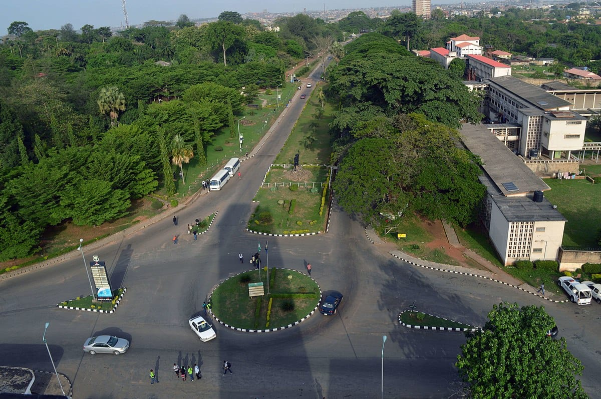

Olayioye Opeyemi
Welcome to my WDD 131 course landing page. I'm excited to build dynamic, responsive websites while studying from Ibadan, Nigeria.
Learning Dynamic Web Fundamentals
In this course I am strengthening my skills in HTML structure, CSS layout with Flexbox and Grid, and JavaScript that makes pages interactive. Every assignment helps me create cleaner, more accessible, and more dynamic websites that work well on any device.
Life and Service in Ibadan
Outside of coding I enjoy preparing Sunday School lessons, connecting with family and friends, and exploring the energy of Ibadan. These experiences keep me grounded and motivated to use technology in meaningful ways that can bless others.
